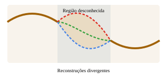
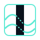

Da parede do poço à imagem

Reconstrução e treinamento
| Linha | Esquerda | Lacuna estimada | Direita |
|---|---|---|---|
| 1 | 60 | 70 | 80 |
| 2 | 62 | 72 | 82 |
| 3 | 64 | 74 | 84 |
Aprendizado com máscaras
- Imagem observada
- Máscara artificial
- Previsão da rede
- Comparação com o original
Continuidade circular
As bordas 0° e 360° são a mesma direção. O tracejado dentro da lacuna mostra uma continuação geométrica ilustrativa.
Hipóteses e incerteza
Quando três reconstruções divergem em uma lacuna, o trecho merece revisão. Mesmo quando as hipóteses concordam, a estimativa pode ter erro.

Evidências de outros sensores
AmplitudePorosidadeResistividadeDiâmetro
As trilhas compartilham o eixo de profundidade. Um intervalo com alterações simultâneas fornece contexto à revisão.
Inspirações da proposta
- Medicina
- Expressar a incerteza da reconstrução.
- Astronomia
- Usar restrições físicas quando faltam medições.
- Aviação
- Cruzar evidências de sensores.
- Geologia
- Respeitar a geometria da parede do poço.
Visualizador e fila de revisão
Conceitos discutidos no chat como GeoEcho AI e GeoVision. Exemplo sintético com intervalos fictícios.
- 3.204 m · possível feição planar, revisar continuidade.
- 3.205 m · divergência alta, manter intervalo inconclusivo.
Fluxo técnico proposto
- Amplitude WAID
- Normalização e máscara
- GeoRestore · reconstrução
- GeoGuard · divergência
- GeoInsight · fila
- Revisão geológica

Teste com referência conhecida
- Selecionar recorte de teste
- Ocultar trecho observado
- Executar método
- Revelar referência e medir erro
Projeção anual de produtividade
Valor estimado da capacidade de trabalho liberada. Os parâmetros abaixo são hipóteses de cenário.
| Equipes | Valor anual (R$) |
|---|
Níveis de impacto a investigar
- Tempo de trabalho
- Menos retrabalho
- Consistência
- Detecção de eventos
- Impacto operacional
Sergipe Águas Profundas
- Mais de R$ 60 bilhões
- Investimento previsto no SEAP
- 32 poços
- Previstos
- 2 FPSOs
- Unidades de produção
- Cerca de 134 km
- Gasoduto previsto
- Mais de 1 bilhão de boe
- Produção prevista ao longo do projeto